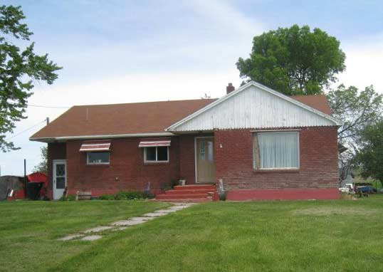

My experience with Preston and Napoleon
Joseph Garner
Napoleon Dynamite was an unexpected hit at the box office. Most movies take place in big cities or fictional small towns.
But Napoleon was shot and it's story took place in Preston. A small isolated town that most people haven't even
heard of. It had little plot, but it worked. It ended up grossing $40 million out of its $400,000 budget.
Back in 2004, my parents were shocked to see how much I laughed at Napoleon Dynamite when we first saw it in theaters.
At the time, I supposdly didn't understand comedy too well, until this experience occurred.
I quickly became obsessed with the movie and watched it many times.
Years later, I visited Preston Idaho on my way up to Yellowstone. Many of the places were still intact. There was Popin Pins
where Kip went bowling with the bumpers. Another place was Preston High. Last time I was there, the cafeteria was renovated. And of course,
there was Napoleon's house. It wasn't any different than the movie.
If you happen to bump into Preston and love Napoleon Dynamite, I recommend going around the town and looking at some of the
places where the movie was shot.